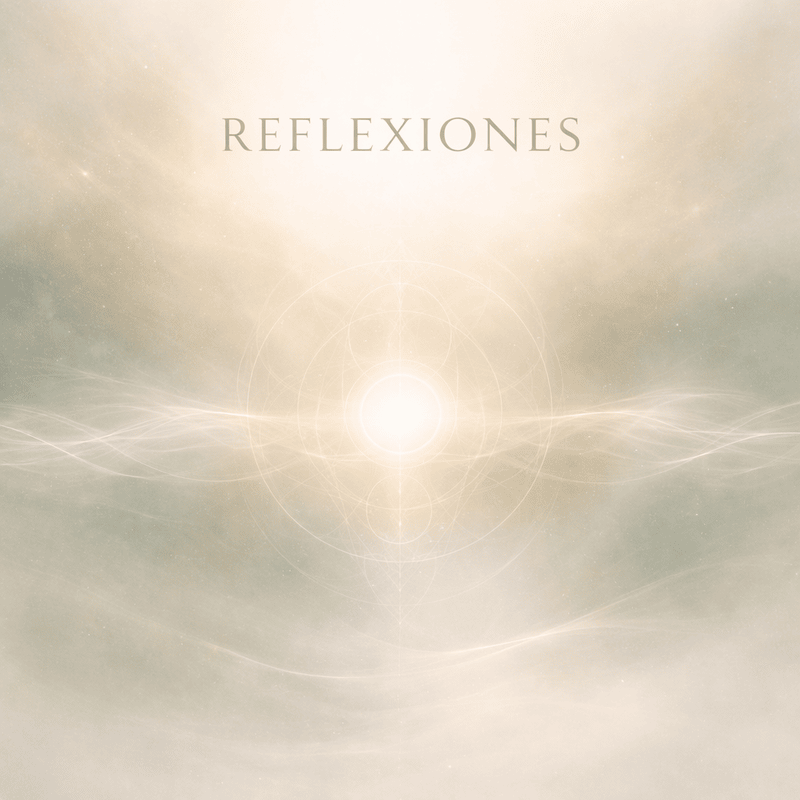

Ecos de Calma
Respirar · Soltar · Volver
Un espacio para bajar el ruido y volver al centro.
AbrirFrecuencias, vibración y energía
Raíz Sonora es un proyecto espiritual y musical dedicado a la sanación, la expansión de la conciencia y el equilibrio energético mediante frecuencias elevadas, música meditativa y paisajes sonoros creados con intención.
Conecta con vibraciones de 432 Hz, 528 Hz, 963 Hz y otras frecuencias sanadoras diseñadas para armonizar tu mente, tu cuerpo y tu espíritu.
Escuchar radioEstas son las playlists principales de Raíz Sonora. Cada una es un viaje: calma, presencia, reflexión y descanso profundo.
Respirar · Soltar · Volver
Un espacio para bajar el ruido y volver al centro.
AbrirMantras · Presencia · Intención
Palabras y vibración para alinearte desde adentro.
AbrirConciencia · Enfoque · Calma
Mensajes cortos que te aterrizan y te elevan.
AbrirSueño · Relajación · Paz
Una puerta suave hacia el descanso profundo.
AbrirTambién puedes escuchar las playlists en Spotify.
Cada frecuencia dentro de Raíz Sonora tiene una intención energética específica. Son herramientas utilizadas para sanar, meditar, elevar la vibración y reconectar con tu propósito interior.
Armonía natural
Considerada la frecuencia de la naturaleza. Ayuda a relajar la mente, soltar tensiones y equilibrar emociones profundas.
Frecuencia del amor
Asociada a la sanación emocional, la transformación interna y la conexión con el amor propio y la vibración de la vida.
Relaciones y conexión
Frecuencia vinculada a la armonía en las relaciones, la empatía y la comunicación auténtica con otros.
Limpieza y claridad
Utilizada para limpiar la mente, despejar pensamientos repetitivos y favorecer la intuición y la claridad interior.
Retorno a uno mismo
Relacionada con el reencuentro con la propia verdad, el despertar interior y la reconexión con tu propósito personal.
Conexión espiritual
Frecuencia vinculada al despertar interior, la intuición profunda y la conexión con planos más elevados de conciencia.
Cada sesión está pensada como un viaje sonoro con intención específica: limpiar, calmar, enfocar o elevar tu energía. Próximamente podrás escuchar estas sesiones directamente desde aquí.
Liberar y soltar
Sonidos suaves, campanas y atmósferas profundas con frecuencias pensadas para ayudarte a liberar carga emocional, tensión y energía densa del día.
Descanso reparador
Paisajes sonoros lentos y respiración guiada para acompañarte a soltar la mente y caer en un descanso más profundo y reparador.
Presencia y conexión
Sesiones con voz, silencios y música de fondo para ayudarte a entrar en un estado de presencia, observación y conexión con tu raíz interior.
Enfoque y claridad
Ritmos suaves y repetitivos, diseñados para mantenerte concentrado mientras estudias, trabajas o creas, sin distraerte.
Estas reflexiones, afirmaciones y mensajes están pensados como pequeñas anclas de conciencia para tu día a día. Puedes leerlas antes de una meditación, al despertar, antes de dormir o cada vez que quieras volver a tu centro.
El silencio es un maestro invisible. En él, la mente deja de empujar, el corazón baja sus defensas y el alma finalmente habla. Cuando aprendes a escuchar ese susurro, descubres respuestas que jamás aparecen en medio del ruido. El silencio no es ausencia: es presencia pura.
Cada persona tiene un compás interno. Cuando intentas vivir al ritmo de otros, tu espíritu se fatiga. Cuando respetas tu propio tiempo, todo encaja con suavidad. La vida no es una carrera; es una danza en la que cada paso se da cuando tu energía está alineada con el propósito.
La claridad verdadera no llega desde afuera. Llega cuando decides mirarte sin prisa, sin juicio y sin miedo. Ahí descubres que siempre hubo una chispa sagrada esperando tu permiso para expandirse. Cuando despierta tu luz interior, el mundo exterior deja de sentirse tan oscuro.
Soltar no siempre es fácil, pero siempre es liberador. A veces lo que cargas ya no te pertenece, ya cumplió su ciclo. Dejar ir es un acto de respeto hacia tu propio crecimiento. Solo cuando abres las manos, la vida puede poner algo nuevo en ellas.
El alma habla bajito porque sabe que solo lo verdadero se escucha en calma. Aparece en forma de intuiciones, sensaciones, corazonadas que parecen pequeñas pero llevan grandes direcciones. Cuando aprendes a escuchar el alma, ya no caminas: fluyes.
Me muevo con la seguridad de que cada paso, grande o pequeño, me acerca a la vida que estoy creando con conciencia y amor.
Elijo pensamientos que me fortalecen, hábitos que me nutren y emociones que elevan cada rincón de mi ser.
Todo lo que llega hoy tiene un propósito que apoya mi crecimiento; lo recibo con gratitud y sabiduría.
Reconozco mi fuerza interior, mi intuición y mi capacidad de transformar cada experiencia en aprendizaje.
Permito que la serenidad ilumine mi camino y que la gratitud abra las puertas que aún no sabía que existían.
A veces la presión te hace olvidar que has superado días que parecían imposibles. Date crédito, estás avanzando.
Incluso cuando no ves resultados inmediatos, cada esfuerzo crea movimiento. Nada se pierde; todo suma.
Tu valor no depende de cómo te sientes hoy. Aun en la incertidumbre, tu esencia sigue brillando.
No tienes que forzar lo que es auténtico. Lo que vibra con tu alma regresa, crece y se queda.
No necesitas una razón para permitirte bienestar. La paz también es un derecho, no solo un premio.
Esta es la selección musical propia de Raíz Sonora: reflexiones sonoras, atmósferas meditativas y paisajes internos para acompañarte mientras exploras la web.
